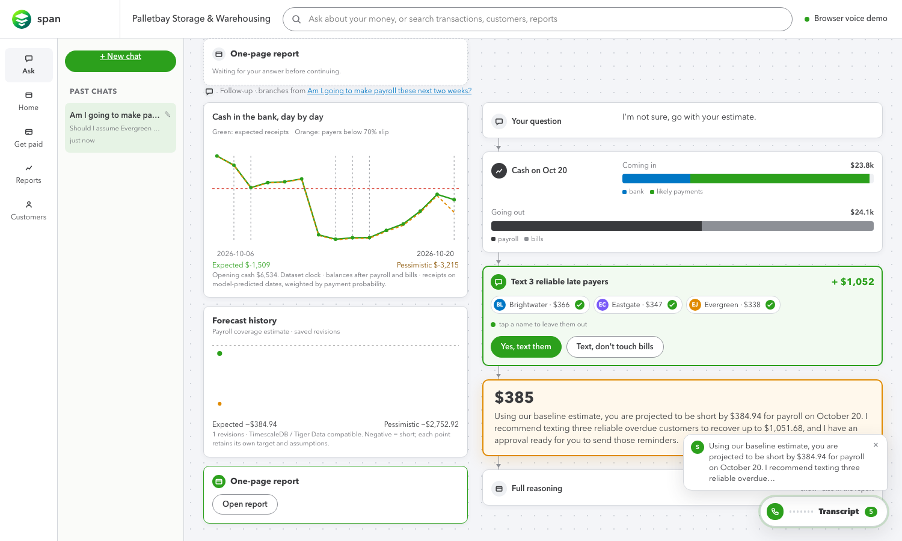
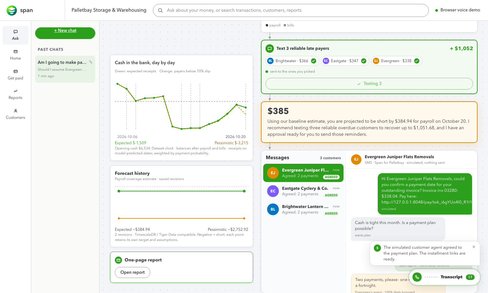
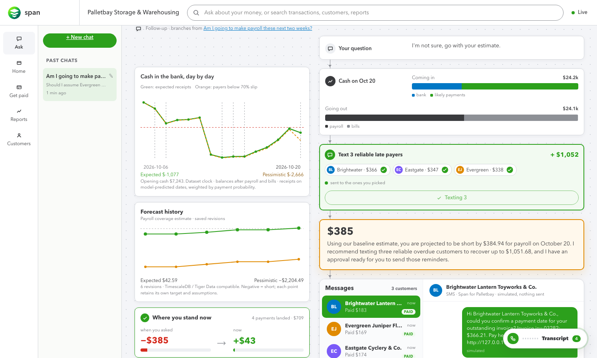
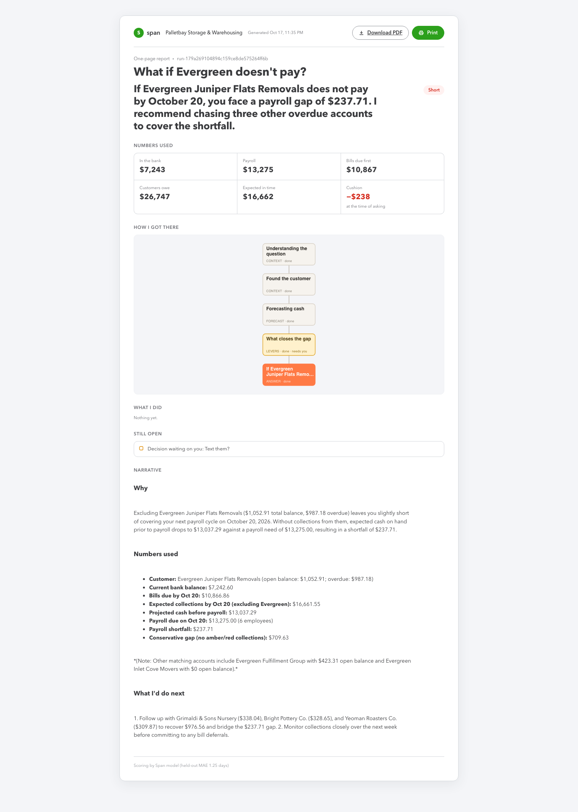

Call Span. Ask if you’ll make payroll.
Watch the answer get made.
A phone number for small business owners. Ask “am I making payroll in two weeks?” and Span reads the books, scores every open invoice by that customer’s payment history, forecasts cash on payday, and asks before it acts. Say yes and it texts the right customers, negotiates installments, takes the payment through a pay link, and the gap on screen ticks down.
Source on GitHub How the demo runs
1. AskBy browser call, typed, or on the phone line. The planner picks tools: read books, score invoices, forecast cash.
2. See the verdict“No. $385 short; $2,753 short if the slow payers slip.” Every number is from the books, dated.
3. ApproveSpan never acts alone. “Yes, text them” sends reminders; the customer agents reply and negotiate under your rules.
4. Get paidPay links on Visa sandbox or Solana devnet. The forecast refreshes and the cushion turns green.




Honesty labels: customer agents are simulated from each customer’s real payment history in the Intuit dataset; card payments use a simulated or Visa sandbox rail; Solana runs on devnet; voice runs in the browser unless the phone line is configured. Nothing is sent or charged without the owner’s approval.